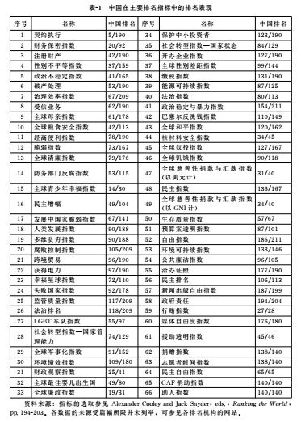
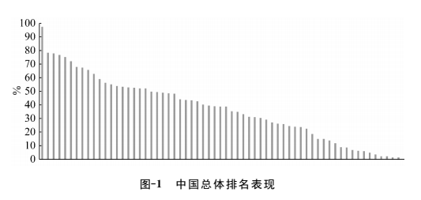
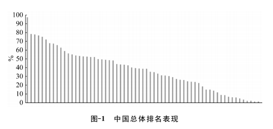
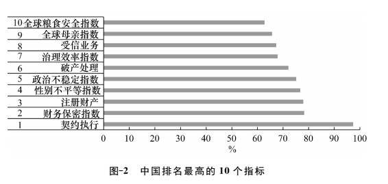
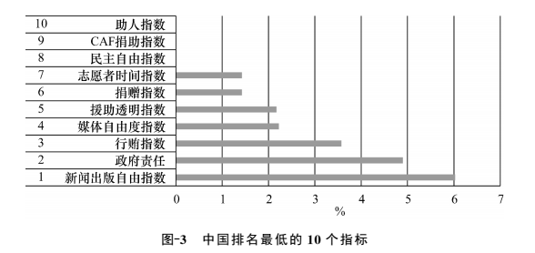

收录于合集
简
董柞壮
董柞壮，南开大学周恩来政府管理学院博士研究生，南开大学与莱斯大学联合培养博士生。
本文的写作得到国家留学基金资助，感谢吴志成教授、陈志瑞教授和刘丰教授提出的宝贵建议，感谢《外交评论》编辑部及匿名评审专家的指正与修改意见。
本文发表于《外交评论》2017年第6期，国政学人公众号编辑，转载请注明来处。
摘要
排名与评级是非国家行为体参与全球治理的方式之一 ，通过引导资源分配、影响国家政策、奖惩国家声誉等路径发挥作用。与此对应，主权国家则从理性主义或社会建构角度出发做出回应。经由排名与评级，非国家行为体在与国家的互动中，通过影响国家治理参与全球治理，推动全球治理向“科学”的指数治理发展，充当了国家治理与全球治理的纽带。同时，排名与评级的过程也存在价值导向和政治偏向等问题，对于改善全球治理的意义主要是间接的，甚至会损害全球治理。由于排名与评级本身的问题，以及中国国内部分领域的治理水平有待提高，中国在大多数排名和评级中的总体表现欠佳，为此应积极改善国内治理，提升中国的国家形象，并加强对排名和评级的实证研究，更加有针对性地回应对中国的排名和评级。
关键词
排名与评级 非国家行为体 全球治理 中国排名 国家治理 国家形象
全球治理涉及众多非国家行为体，而现有研究对各类非国家行为体参与全球治理的方式缺乏关注。 ****评价对比各国的国内政策表现，是非国家行为体参与全球治理的途径之一，也是全球治理的具体技术层面的意涵。近二十年来 ，发布排名和评级（ＲａｎｋｉｎｇａｎｄＲａｔｉｎｇ）指标的组织大幅增长，在国际政治中的作用日益显著，它们在与主权国家的互动中拥有更大权力，这不仅成为全球治理发展的缩影，也深刻影响了包括中国在内的主权国家的利益和形象。如２０１１年８月，标普首次下调美国主权信用评级，引发了美国政府的反驳。实际上，除主权信用评级外，针对主权国家各领域的评级和排名正蓬勃发展。那么， 排名和评级在全球治理中发挥了怎样的作用？中国在其中的具体表现如何？应怎样看待和应对排名与评级、维护国家利益与形象？ 本文将系统研究国际评级和排名的发展和作用路径，讨论其在全球治理中的积极意义和消极影响，考察中国的排名和评级问题并提出建议，以此观照中国的国内治理与国家形象。 （ 本文经国政学人公众号编辑，转载请注明来处 ）
一、排名和评级的作用路径
发布排名和评级的行为体包括各类国际组织、商业机构、智库、高校和个人等，评价的对象通常是各国的国内治理表现。 排名和评级的对象涉及国家的主权信用情况、经商条件、环境保护、人权状况以及政府廉洁度等方面。主权信用评级是全球范围内最早出现的国家评级项目。部分信用评级机构出现较早，标普最早可追溯到１８６０年，正式成立于１９４１年，穆迪成立于１９００年。两者最初主要为企业债务评级，自２０世纪９０年代起国家主权债务评级开始兴起。①而大多数国际排名和评级出现于２１世纪，据统计，截至２０１５年，全球性媒体上出现过的评价指标大约有９５个，其中三分之二诞生于２００１年后。②排名和评级并非仅对事实或数据进行简单排序，如对国内生产总值的排名，而是更加侧重评价，都有各自固定的评价标准。排名和评级的结果，不仅能够影响国家的利益与形象，也是学术研究的重要资源，既可用以划分国家类型如政体类型、社会是否稳定，也可指代国家在特定指标上的水平，如廉洁状况、福利水平等等。
（一）作用路径
排名与评级伴随着各类社会评价体系的发展而兴起。 例如在消费领域，为满足顾客需求而对种类繁多的商品和服务进行排名，在教育领域对教育资源的质量进行评价，在投资领域对投资环境进行对比。排名和评级主要依靠实地调查以及各国政府的公开信息，信息技术的发展是社会评价体系繁荣的支撑，其使信息和数据的搜集、分析更具可行性，所以借助一些新技术，排名和评级的发布机构能够有效地设定各类指标，发布较为可信的排名结果。①现有对国际排名和评级的研究主要集中于国家主权信用评级，即讨论三大信用评级机构———标普、穆迪和惠誉———的评级结果和影响，其他领域的排名和评级由于影响力相对较小，缺乏足够的关注。②部分研究则开始注意指数化对国家参与全球治理的重要作用，并着手建立新的评价指标。③
排名和评级是非国家行为体对国家行使权力的一种方式，因而可以从权威的视角考察这一现象，包括排名和评级为什么能够在全球治理中发挥作用、其权力来自何处、主权国家对排名和评级的反应如何。 事实上，发布排名和评级的行为体属性差别极大，不同类型的行为体权威来源各异。在全球治理中，存在跨国等级权威、超国家权威与私有权威三种权威形式。④其中跨国等级权威主要涉及国家与国家间的关系，尤其是主导国家与从属国家的关系，主要的作用方式是安全与经济上的不对等依赖。⑤超国家权威主要是政府间的国际组织对主权国家行使权威，私有权威则是指非政府的组织和个人对国家拥有影响力。超国家权威与私有权威在全球治理中发挥作用的方式之一即是发布排名和评级。在既有的排名与评级行为体中，私有权威占主导地位并最受学界关注，学界自２０世纪９０年代起便已经开展了相关研究。⑥
总体来看，超国家权威与私有权威的来源共有五种，即机制型权威、授予型权威、专家型权威、基于原则型权威和基于实力型权威。 ①排名和评级的权威来源主要是专家型，即依靠自身在特定领域的专业知识获得影响力。此外，排名和评级也包含部分非正式的国际制度，这便涉及机制型权威。权威表现为“正式—法律性”权威（Ｆｏｒｍａｌ－ＬｅｇａｌＡｕｔｈｏｒｉｔｙ）或者“关系性”权威（Ｒｅｌａ－ｔｉｏｎａｌＡｕｔｈｏｒｉｔｙ）。②前者基于法律、条约等社会契约，后者则源自社会的影响。就排名和评级而言，相关行为体通过设置被广泛接受的评级标准，影响一国国家利益或形象，而非通过公共性的立法来发挥影响力，其奖惩机制是社会性的奖惩。排名和评级在全球治理中发挥作用的主要方式是设定标准并据此排名，从而对相关国家的声誉、利益和政策偏好产生影响。其具体的作用路径有如下三种：
** 一是引导资源分配。**在涉及投资、贸易、对外援助等领域的排名和评级中，排名结果标志着一国接收投资、援助的能力和条件，以及与之进行商业交往的国内环境。此类排名不仅反映了对象国家的状况，而且评级和排名的标准、结果会被相关国家和企业借鉴，成为它们决策的重要依据，从而影响物质资源分配。这类排名和评级的作用最为明显，也最受关注。例如，作为美国政府官方对外援助机构之一的千年挑战公司，其对外援助的标准包括对象国的健康政策、通胀水平、公民自由等２１项指标，涉及世卫组织、国际货币基金组织、自由之家等多个机构，并依据这些机构发布的排名报告决定对外援助的分配。③该公司自２００４年成立以来，至２０１６年已累计对２１个国家进行了７５亿美元的对外援助。④此外，世界银行发布的“营商便利指数”（ＥａｓｅｏｆＤｏｉｎｇＢｕｓｉｎｅｓｓＩｎｄｅｘ），⑤更是很多国家对外援助和企业对外投资的重要参考，可影响被评价国家吸引外资投资的能力。主权信用评级还能够决定借款国取得贷款的能力和国家的融资能力。⑥
可见，排名和评级的结果通过多种途径，决定了国际社会中部分资源的分配。资源的分配影响国家的物质利益，从而促使国家重视排名和评级的结果，以避免其对国家利益构成损害。同时，排名和评级对资源分配的引导作用，也会增强排名和评级机构的影响力，提高其声誉。然而，评级和排名在全球治理中的影响力越大，在资源分配中起的作用越显著，国家影响甚至操控评级和排名的动机也就越强烈，这一点容易导致评级和排名受国家影响而出现偏差。①
二是影响国家政策。 各类国际组织等发布排名和评级的非国家行为体，被视为参与全球治理的主要行为体，其本身的目标就是通过创设议题议程、建立规则程序以及评价政策结果来影响各国的政策。②排名和评级机构主要通过提供政策建议、指导国家进行政策学习等方式直接影响国家的政策选择。在政策学习上，排名和评级机构可以在自由贸易、环境保护等领域设定标准，如果此类标准被国际社会广泛接受，就容易被国家内化为其国内的政策依据，随后主权国家在这些领域的国内政策也会加以调整，由此排名和评级能够在一定程度上塑造国家的政策偏好。此外，评级和排名会在特定领域对国家的政策进行排名，比较各国的政策效果，对于在部分领域排名表现不理想的国家，排名和评级可以促使其借鉴政策表现相对较好的国家的经验，在经济发展领域尤其如此。③
在政策建议上，排名和评级机构可以为国家提高排名提供指导。在国际发展援助领域，发展中国家的国内治理状况是发达国家执行发展援助的参照。为了帮助发展中国家获得更多发展援助，在发展领域的排名和评级机构会提供相应的政策建议，这也成为发展中国家制定国内政策的重要依据。④在政策策略选择上，发展中国家更容易接受排名组织的建议，策略性地选择和制定国内发展政策，谋求更高的排名，从而获得更多发展援助。⑤例如，在国际贸易领域，由于签署特惠贸易协定能够提高国家在主权信用评级中的排名、增强获取贷款的能力，因此，国家会更有动力签署特惠贸易协定，执行特惠贸易政策。⑥
三是奖惩国家声誉。 通常国家声誉的形成需要一定的过程，对声誉的判断既可依据国家过去或者当下的作为，也要考虑国家所处的国际环境背景。⑦实际上，声誉的形成和维持通常需要付出成本，比如承担国际责任、信守承诺等，这有可能牺牲一定的国家利益。国家声誉的塑造比较困难，但是声誉的破坏却比较简单。提高排名和评级是国家塑造声誉中成本较低的选项，而排名和评级的下降则会轻易破坏国家的声誉。排名和评级在特定领域将所有国家的表现罗列出来，表现好的国家将获得形象和声誉上的奖励，从而强化一国的品牌建设。①此外，在排名和评级中表现较好的国家，往往可以间接增强国家政权的合法性，提升国际社会对该国的认同程度。在此过程中，排名和评级机构一方面发挥声誉监管功能，如在国际金融关系中，主权信用评级已被视为可信的声誉仲裁者，另一方面通过发布排名和评级，也使其他行为体在做出与被评价国家相关的决策时成本更低。②
排名和评级主要通过点名羞辱（ＮａｍｉｎｇａｎｄＳｈａｍｉｎｇ）③惩罚声誉较差的国家。不同国家在国际社会中获得的关注度差别很大，大多数国家的国内状况并不为国际社会所熟知，尤其是在部分专业领域，如社会福利政策、慈善体系、人权状况等，因此，在特定领域将所有国家的政策表现进行对比曝光，着重批评表现较差的国家，此举对于聚焦国际社会关注、通过施加国际压力改善国家治理和全球治理有积极意义。然而，对国家声誉的惩罚并不必然促使相关国家有动力加以改善，因为在很多非直接影响国家利益的排名领域，排名较低的国家由于国内状况各异、国家能力不同，改善排名和评级的意愿和能力都不足。例如，在人权保护领域，点名羞辱通常能够促使被批评国家改善人权状况，但是一方面由于各国保护人权的能力差异较大，另一方面有些国家会通过破坏人权来应对国家批评、巩固国内统治，因此点名羞辱有时也存在一定负面效果。④
（二）国家对排名和评级的反应
国际排名和评级在全球治理中发挥作用的路径并非是单向的，它同时是在与主权国家的互动中实现的，因此考察排名和评级的作用，还应该关注被评价国家的反应。 发布排名与评级，国家对其做出回应，是排名与评级产生作用的完整逻辑。实际上，国家对排名和评级的反应差异很大，部分国家会将排名反映出的问题作为改进政策的优先方向，部分国家则指责排名和评级中存在的问题。与国家的互动不仅是排名和评级发挥作用的关键，也是非国家行为体参与全球事务的基石。在国际政治中，排名和评级的科学性，即数据权威性、算法准确性等，并不是唯一决定国家对排名反应的因素，国家的回应受很多变量影响，如排名和评级对国家利益的影响程度、国家实力、对排名公正与否的态度、国内政治形势等，因此，讨论国家对排名和评级的反应难以形成普遍性的框架。从理性角度考虑，国家的反应主要基于维护本国的国家利益，这可以从理性主义和社会建构的角度进行考察。①
从理性主义角度来看，如果排名和评级能够影响国家的物质收益，国家对排名和评级的结果会更加重视，这也是排名和评级最重要的影响力来源。 在经济、金融、投资等领域，因为其能够影响国家的物质收益，排名和评级影响力巨大，如欧债危机时三大评级机构下调了部分欧洲国家的主权信用评级，使这些国家的经济状况雪上加霜。在这类领域，如果国家在与评级和排名机构的博弈中处于下风，即评级和排名对该国影响力巨大且国家接受排名和评级的标准，那么排名较低的国家会更重视排名结果，并会采取措施以调整相关领域的政策。如果国家不接受排名结果，认为排名和评级结果不合理或者存在偏见，国家也可能攻击排名的可信性，或者采取贿赂等非法方式提升排名。而在其他不影响国家物质收益的领域，或者国家在与排名机构的博弈中占据上风，那么国家对自身排名高低并不会过于在意。
社会建构的角度来看，由于很多排名和评级的测量指标被国际社会广泛接受，成为通行的标准，因此国家存在接受此类标准从而提高排名的动机。 然而，由于国家间国内政治、国际地位的差异，国家通过国内改革接受统一标准的难度各不相同，即各国面临的内化全球治理规范的成本不同。②而对于变革成本较高的国家，选择廉价的方式进行变革、提升排名是可行的选项，因此有些国家为了提升排名和评级而进行有限度的政策改革，以迎合排名和评级的标准。可见，国际排名和评级作为全球治理的专家型权威运作方式，通过多渠道对国家和全球事务发挥影响，在与国家的互动中实现了对全球治理的参与。 （ 本文经国政学人公众号编辑，转载请注明来处 ）
**
二、排名和评级在全球治理中的意义
**
排名和评级作为非国家行为体参与全球治理的方式，对完善全球治理实践有积极意义。一方面，排名和评级为全球治理提供了评价指标，让全球治理可量化与可操作，其还对各国的表现进行评价对比，客观上推动了全球治理发展。另一方面，由于国家对排名的追求，使得国家能够关注特定领域的治理效果，最终以改善国家治理的方式参与全球治理。其 正面作用 主要体现在以下两个方面。
（一）工具理性与指数治理
在实行方式上，排名和评级可被视为国内政治和国内社会中工具理性的国际延伸。 在现代国家治理中，官僚制、政治过程与行政管理中强调程序正义，①关注政治的标准化、符号化属性，注重建立和使用普遍规则和理性标准，试图将所关注的对象简化为“纯形式的、客观的、中立的、不包含价值判断的合理性规则”。②而在社会生活中对社会各方面的科学管理，包括生产管理、企业管理和行政管理，也都贯彻着工具理性精神。③这是社会科学发展的必然过程，也是行政管理、社会治理的科学化体现。排名和评级受工具理性倾向的影响，试图在国际社会中对全球事务进行“科学管理”，通过设定普遍的“科学”标准，将国家的表现符号化为特定治理领域的得分，从而将复杂的国内政策表现量化为数字或等级。在简化与量化的过程中，推动排名和评级的行为体都以坚持程序正义为首要原则。
排名和评级简化了国家间的对比，能够直观、简单地比较国家在某一领域的表现，清晰易懂。 排名和评级采用统一的标准和方法，相对于角度多元、细节丰富的专家访谈、历史描述或研究报告，优点之一是能够直观形象地呈现出国家政策的表现，并容易与其他内容相结合。如果将评级数据做成表格，可以将所有国家的数据进行直接比较，如果做成图像，将各国的排名数据标示在地图上，可以展现国家排名的地理分布，展示特定领域全球治理的全景图像。④优点之二是容易辨识。排名和评级使得一国的治理数据更加可读，也可使全部国家在特定领域的表现彰显出来。即使没有对所有国家历史、国情的了解，也可以大致了解该国的表现如何。①然而，这种方式的缺点是在简化国家的治理表现的同时，也将国家的国内政治环境以及国际环境一并简化，从而忽视了国家出台政策的背景，以及其他国家在同一领域“好政策”的适用性。此外，虽然排名和评级在形式上坚持科学，但在价值观上并不中立，相反，却意在通过排名和评级宣扬推广特定的价值观。
总体而言，从工具理性的角度来看，通过简化国家在特定领域的表现，并将国内政策、国情、历史等各种维度融入得分数字中，排名和评级成为全球治理的有效工具。 国际排名和评级通过设定统一的标准，在特定领域对相关国家进行横向公开比较，从而对众多被评价的国家产生影响，这使得排名组织具备治理的条件。②以这种方式进行的全球治理提供了明确、可操作、可衡量、统一的标准，也提供了评价全球治理效果的指标，因而呈现出“指数治理”的特征，这在一定意义上是全球治理进步的体现。
（二）联结国家治理与全球治理
需要明确的是，排名和评级的作用方式存在区别。排名是相对于其他所有国家而言国家的表现所处的地位或位置，其中所有国家的排名相互关联、彼此竞争。评级则是相对于国家自身的表现来说能够达到特定标准的哪一项，国家的判定级别是相对独立的结果。 在此基础上，现有研究提出排名和评级具有以下四种功能。 ③
一是评价功能。 发布排名和评级的非国家行为体通过搜集国家表现的信息，对国家的行为进行评价，相关组织通过引导资源、影响政策、塑造声誉等方式促使国家做出政策改进，对做出相应改进的国家给予奖励，而对表现差的国家则点名批评。 二是作为全球性管理者， 排名和评级是私有权威发挥作用的方式之一。排名与评级主要通过制定标准、规则等途径进行管理，并为主权国家所接受，从而成为非国家行为体参与全球治理的工具。排名和评级能影响资源分配，促使国家愿意接受排名和评级机构的管理。 三是作为倡议者， 开展排名和评级的非国家行为体通过发布评价结果比较各国的表现，将国内行为体和国际行为体广泛动员起来，形成特定议题的跨国倡议网络，对国家的行为进行监督，也促使国家提高在该领域的竞争力。 四是宣示排名组织。 当前全球治理机制面临机制数量过多的问题，各类治理机制形成交叉、重叠的机制复合体。事实上，全球治理机制间存在竞争关系，在参与全球治理的进程中，国家需要甄别、选择合适的机制。排名和评级可以帮助治理机构在特定领域获得更大影响力和话语权，成为该领域全球治理结构中的关键组织，进而获得更多声誉和经济支持。
非国家行为体通过排名和评级参与全球治理的具体方式虽然较多，但是主要的路径是通过提升国家治理水平来改善全球治理。 一方面，国家治理与全球治理互相影响，优化国家治理是改善全球治理的主要路径。 当前国家治理能力的弱化是全球治理失灵的原因之一，变革全球治理需要国家治理能力的改善，国家治理的水平直接关系全球治理的质量，现代化、高水平的国家治理是全球善治的首要条件。①排名和评级通过影响国家治理间接参与全球治理，其作用的对象是一国国内存在的问题，通过引导、督促、劝说、惩罚等方式促使国家改善此类问题。 另一方面，国家治理本身也被视为全球治理的重要对象。 ②由于很多全球性问题的根源是主权国家国内治理水平低下，因而国家治理与国内问题一道，都是全球治理的关注对象，因此，排名和评级的作用对象也包括国家治理本身，促使国家改善国内治理的质量。
可见，排名与评级的主要意义是充当国家治理与全球治理之间的纽带。 全球治理在多个维度上影响国家治理，包括全球性价值导向、全球善治理念、全球治理机制、治理主体多元化，③排名和评级是全球治理影响国家治理的具体实现途径之一，其在各个维度评价国家的行为，引导和激励国家做出改进。同时，如果不考虑排名结果的价值偏向、公正与否，排名和评级也反映出全球范围内主权国家参与全球治理的能力和意愿，这是全球治理在国家治理层面的表现。它既提供了其他国家参照的标准和典型，也反映了在某些全球治理领域的“洼地”，借此排名与评级有助于督促评分较低的国家，有重点地对治理能力较弱的国家提供援助，通过改善部分“落后”国家的国家治理，提升全球治理的整体效果。在实际中，排名和评级在部分领域发挥了积极作用。例如在反腐败领域，透明国际发布的“清廉指数”（ＣｏｒｒｕｐｔｉｏｎＰｅｒｃｅｐｔｉｏｎｓＩｎｄｅｘ）是全球反腐败领域的引领性指标。虽然这一指标存在部分问题，如忽略了与腐败相关的议题而只关注腐败本身，但是在界定腐败行为、设定反腐败议程、动员国际社会共同反腐败等方面发挥了积极推动作用。① （ 本文经国政学人公众号编辑，转载请注明来处 ）
**
三、排名和评级存在的问题
**
排名和评级在全球治理中发挥作用的同时，其结果也广受批评。 这源于排名和评级自身存在的问题： 一是 发布排名与评级的行为体具有自主性，必然会受自身组织利益的影响，无法在评价上做到完全公平中立。 二是 此类行为体本身具有价值偏好，做出的评价会带有价值倾向性。 三是 限于排名所需资料的可获得性、社会环境的复杂性，排名和评级无法在掌握全面信息后作出判断，其结果可能具有片面性。四是部分行为体受主权国家影响较大，评价不可能超脱现有的主权国家体系。相对于其他参与全球治理的方式，排名和评级更具争议性， 存在的问题主要有以下五个方面：
第一，以“科学”标准做价值评判。 排名与评级试图通过标准化的程序及工具理性衡量国家的表现，然而其衡量的对象往往带有价值属性或道义色彩，即评价的标准与评价的对象性质并不匹配。二者的错位可能会造成一种错误认知，认为以“科学”方式进行的评价就是“正确”的评价，然而，评价过程的科学性并不意味着结果可取，对价值理念的判断很难形成广为接受的标准。实际上，算法、资料和参照标准的科学性，并不一定带来结果的正当性。当然，绝大多数排名和评级机构从未声称价值中立，而是强调其排名资料的权威性以及算法的科学性，此类排名和评级的最终目标是通过“科学”的排名来进行价值引导。与制定其他方面的全球性标准如电信标准、企业管理标准等类似，部分排名和评级试图建立在国际社会通行的价值标准之上。例如就民主制度这一指标而言，其本身除了是一种政治体制外，也被视为广为接受的“普世价值”。作为一种政治状态，民主被广为接受并不意味着存在统一的评价标准，各国实现民主的可行性、条件、效果等差异极大，各排名和评级机构对于民主的评价标准也不一致，甚至相互冲突，如“自由之家”①和“政体四” （ＰｏｌｉｔｙＩＶ）②是学界广泛使用的民主评价数据，二者的评价标准各不相同，前者更注重一国人权方面的表现，包括政治权利与公民自由，后者则注重考察一国民主的质量，即国内治理机制的运转状况。尽管评价民主制度的侧重点不同，这两项评级指标都是以西方国家为参照系，以宣扬西方的民主价值观为己任，甚至“自由之家”组织的主要成员均由美国人担任。实际上，对国家内部的政治、法律体系的运转有无单一评价标准目前尚不能确定。排名和评级组织除了搜集信息和数据、进行量化比较外，应当同时衡量国家的发展进程、发展目标以及国内环境因素，单一的衡量标准对非西方国家有失公平。现实中意识形态的渗透常会以接受“普世标准”的面目出现，排名和评级机构则掌握着标准制定、评价的权力，如果不加考察地接受排名和评级的标准，尤其是各类西方的政治理念，容易误导其他非西方国家的意识形态，甚至影响国家的稳定与安全。
第二，政治倾向性明显。 排名和评级除了在价值观上的非中立，在组织上也并不能独立。发布排名和评级结果非常容易受政治因素的干扰，从而影响其排名和评级的结果。政治上的干扰和倾向性主要表现为两个方面：一是受大国影响较大。排名和评级为了博取影响力，会重点关注大国的表现，注重对有影响力的大国进行调查评价。与大国的互动、针对大国的排名更容易获得关注。例如“大赦国际”重点关注中美等大国的行为，将特定领域大国的表现作为典型案例。③相应地，大国更有意愿对此类机构施加影响，以维护本国的利益与形象，特别是美国等西方大国，对排名和评级机构的影响力更大。例如２０００年世界卫生组织曾发布排名报告，对１９１个成员国的卫生政策表现进行排名。这一排名结果广受争议，其中美国等国家的排名较低，受到美国、加拿大等西方国家的批评，美加等国认为排名并无必要，世界卫生组织只需发布国别报告即可，此后世卫组织再未发布过类似排名。④二是西方国家在排名中占据优势。很多排名和评级的标准都以西方国家为样板，所以西方国家在相同情况下往往排名更高。例如在主权信用评级中，信用评级机构往往会选择性地无视发达国家的经济状况，而对其主权信用状况给出过高评分。①在国内治理议题方面，根植于西方国家治理的评级指数在价值偏好、结构设计和方法论上也存在明显缺陷。②因而，现有的多数评级与排名都在一定程度上带有政治倾向，使其可信程度大打折扣，甚至被非西方国家视为西方国家干涉内政的工具。
第三，对全球治理的间接性贡献。 就改善全球治理而言，排名和评级并未直接针对全球性问题本身。如前文所述，排名和评级的对象主要是国内议题和国家治理的水平，尽管国家治理的改善是实现全球善治的必要条件，但却非充分条件。排名和评级可以激励排名较高的国家，惩罚表现较差的国家，促使国家改善相关领域的治理政策，但排名和评级发挥作用的关键依然是主权国家的接受和认同，同时即使排名和评级结果被国家接受，也并不必然导致一国国家治理的改善。因此，排名与评级以改善国家治理来促进全球治理的前提是其为主权国家所承认，并依赖国家的执行。部分排名和评级以西方标准来评价所有国家的表现，加之评价和评级标准的价值倾向明显、政治色彩浓厚，因而其结果很难得到全部国家的认同，更无法提高所有国家改善国内治理的意愿和能力。同时，部分排名结果的可信度存疑，如果国家认为其不可信，那么可能不会接受排名和评级的结果。此外，国家在特定国内治理领域的排名越高，并不意味着其在全球治理中的贡献越大，甚至有排名较高的国家在全球治理中态度消极，所起作用有限。美国在各类评级中总体排名较高，但是在部分全球治理议题如气候治理上态度反复，还拒不执行《巴黎协定》。可见，排名和评级作为一种参与全球治理的方式，其对于全球治理是否有更加直接的积极意义依然有待探索，自身更需要克服各类问题。
第四，排名和评级的过程可能损害全球治理。 鉴于评级对国家物质收益和声誉的影响，部分排名较低的国家有动力去影响排名机构的行为以提高自身排名。此类国家的主要方式是对排名机构进行游说公关，这一行为也被称为“排名外交”。部分国家的排名外交作用显著，如格鲁吉亚为改善商业环境排名、吸引外资，对世界银行的“营商便利指数”的公关行为和游说，就使其排名大幅提高，从２００６年的第１００／１５５名，飚升至２００７年的第３７／１７５名、２００９年的第１５／１８１名以及２０１７年的第１６／１９０名。③作为参考，格鲁吉亚２０１５年在另一项排名指标“全球竞争力指数”（ＧｌｏｂａｌＣｏｍｐｅｔｉｔｉｖｅｎｅｓｓＩｎｄｅｘ）中仅排第６６／１４０
名。①排名提升的原因并非是格鲁吉亚国内经商环境的根本性改进，而要归功于其卓有成效的公关行为，以及针对排名的关键指标进行有针对性的国内改革，包括颁布法律法规、改进政府运行机制等。但是改革的内容与实际效果却极为有限，尽管格鲁吉亚按照排名的标准进行了改革，但是这一改革主要是象征性的，并没有太多实际意义，同时其排名的上升也并未带来持续的外资输入。由此可见，部分国家为提升排名一方面可以进行对外游说，加强与排名机构的联系，另一方面还可以对内采取有限的改革以提高排名，而不用采取根本性变革。②此类排名的变动无助于一国国内治理的改善，更会损害排名和评级的公平性，降低其他国家对排名结果的认同，进而损害排名和评级在全球治理中的作用。此外，各排名机构之间也相互影响，为降低偏差和误判概率，它们经常会参考其他同类排名机构的结果，如在经济危机过程中三大主权信用评级机构间往往采取类似立场，而非保持独立判断，小型的评级机构反而更容易做出独立的判断。③
第五，竞争性排名方式存有争议。 相对于其他的全球治理方式而言，排名和评级缺乏广为接受的标准，从而凸显了其竞争性排名方式的短板。例如在全球经 济 治 理 领 域，国 际 会 计 准 则 理 事 会 （ＩｎｔｅｒｎａｔｉｏｎａｌＡｃｃｏｕｎｔｉｎｇＳｔａｎｄａｒｄｓＢｏａｒｄ）、国际标准化组织（ＩｎｔｅｒｎａｔｉｏｎａｌＯｒｇａｎｉｚａｔｉｏｎｆｏｒＳｔａｎｄａｒｄｉｚａｔｉｏｎ，）以及国际电工委员会（ＩｎｔｅｒｎａｔｉｏｎａｌＥｌｅｃｔｒｏｔｅｃｈｎｉｃａｌＣｏｍｍｉｓｓｉｏｎ），在各自领域制定了被普遍接受的标准，④降低了各自领域内国家沟通的成本，为所有接受标准的成员提供了公共利益，而非损害部分国家的利益。就排名和评级而言，由于上述四方面的问题，竞争性的排名方式显得更加不公平。国家排名较低可能并非由于自身的治理问题所致，其利益与声誉可能面临损害，因而往往对排名和评级结果持批评态度。同时，竞争性的排名可能会忽视一国国内治理所取得的进步。排名的竞争性对表现较好的国家有激励作用，但是对于排名较低的国家而言却并非如此。此外，国家排名的变动也影响国家对排名和评级的态度，进而影响其改善国内治理的意愿，为此，部分排名组织开始倾向于发布具体的国别报告，而不是进行竞争性的排名和评级，以尽可能减轻排名过程中的问题，提高排名的针对性和接受度。 （ 本文经国政学人公众号编辑，转载请注明来处 ）
四、中国的排名表现
改革开放以来，随着中国综合国力与影响力的迅速提高，中国的国际地位大大提升，成为发展中的全球性大国，然而，中国的国家形象并非随之自动改善，甚至成为中国全球性大国建设的短板。在各类全球性排名中的表现，不仅事关中国的国家利益和声誉，甚至经常被作为批评或攻击中国的借口，损害中国的国家形象，所以，有必要全面考察中国的排名和评级表现，理性看待排名和评级对中国国内治理和国际形象的作用，同时采取措施应对排名和评级带来的不利影响。
（一）中国的各项排名
一国的国家形象直观地反映在各类排名中，其中包括对国家形象或品牌进行专门排名的指标。①然而，单一的排名指标一方面由于其片面性，容易引发排名较低国家的争议。另一方面，单项排名的衡量内容有限，无法体现一国整体的排名情况，所以，可以通过观察主流的排名结果，多角度、全面地考察一国的排名表现。表－１是４４家排名和评级机构发布的６６项排名数据以及中国的排名状况，各项排名数据截止到２０１７年６月，均为最新排名。其中发布于２００５、２００７、２００８、２０１０、２０１２、２０１３年各１项，２０１７年２项，２０１１年３项，２０１４
年５项，２０１５年１６项，２０１６年３４项。表－１所选指标仅为主要的排名类指标，不包括仅进行评定等级的指标，如三大主权信用评级机构的评级结果。同时，表－１所选取指标均为全球性排名，排除了只针对某一区域国家排名的指标，比如对欧洲国家的排名“公民社会组织可持续发展指数” （ＣｉｖｉｌＳｏｃｉｅｔｙＯｒｇａｎｉｚａ－ｔｉｏｎＳｕｓｔａｉｎａｂｉｌｉｔｙＩｎｄｅｘ）、对非洲国家的排名“伊布拉欣非洲国家治理指数”（ＩｂｒａｈｉｍＩｎｄｅｘｏｆＡｆｒｉｃａｎＧｏｖｅｒｎａｎｃｅ），以及针对中东欧、中亚国家的“转型国家指数”（ＮａｔｉｏｎｓｉｎＴｒａｎｓｉｔ）。中国的排名为在该指标中所有参与排名的国家和地区中的排名数据。

. 




为更直观地表现排名结果，可参考图－１中国排名和评级的总体表现。图中的柱形所指数值为中国排名的正向排序百分比，即排名表现超过多少参加排名的国家，从数值可见中国的排名总体上落后，大多数排名指标未超过５０％，处于中下游水平。图－２是中国在其中排名最高的十个指标，主要集中在国内经济治理领域，表明中国在国内经济治理上成效显著，这是经济高速发展的国内基础。值得注意的是，尽管在这十项指标中中国的排名较高，但是仅有“契约执行”一项超过全世界９７％的国家，其余则低于８０％的国家。图－３是中国在其中排名最低的十个指标，主要集中在社会治理领域，表明与西方发达的公民社会治理水平相比，中国的社会治理水平总体有待提升。其中有三项中国排名最后，“助人指数”和 “ＣＡＦ捐助指数”用一国民众在特定时段的助人行为 、捐赠财物量来衡量一国的慈善水平，① “民主自由指数”则以宣扬民主价值观为导向，这三项排名均与国家的社会环境、文化传统紧密相关，并具有鲜明的西方价值指向。
（二）中国排名表现反映出的问题
中国的排名表现既在一定程度上反映了中国国内治理的问题，也受评级机构本身的价值导向、运作机制、评价标准影响，是多重因素综合作用的结果。总体而言，中国的排名表现可以反映出如下三类问题：
首先，中国国内治理水平有待提高。 纵向来看，与过去的表现对比，中国国内治理取得很大成绩，相关排名有所进步，国际形象也有显著改善，同时与其他发展中国家相比，中国的排名并非过低。此外，虽然受其本身价值观、政治倾向、排名外交的影响，部分排名机构对中国的排名有失公允，然而，不可否认的是，中国的软实力与硬实力并不匹配，中国的国家形象依然存在很大提升空间，而改善排名表现的根本在于持续改善国内治理水平。就积极方面而言，排名和评级所反映的问题应当成为中国国内治理改革的参考。横向的排名比较有助于指明中国的国内治理与其他国家的差异和差距，我们可以从排名较高的国家汲取经验，促进国内治理的提升。针对排名和评级所反映的问题加以改进，也是中国改善国内治理、有效参与全球治理的契机。国内治理的改善不仅有助于加强中国参与全球治理的能力，也有利于改善中国在全球事务中的形象，所以，塑造和维护国际形象不仅需要靠宣传推广治标，更需提升国内治理以治本，国家形象的改善应当与国内治理的提升同步实现。
其次，应区别看待各类排名表现。 中国在不同类型排名中表现差异较大，如在政府间国际组织和非政府组织发布的排名中差别显著。中国在政府间国际组织发布的排名中表现相对较好，中位数为５２．１３％，即整体表现超过了一半的国家，而在非政府组织发布的排名中，中国排名则相对较低，中位数仅为２９．８％，即总体表现只超过了约三成的国家。事实上，政府间国际组织的排名对象相对客观，如对企业注册资产、人类发展指数的排名，此类排名评价主要依据的是各国的公开数据，较少涉及价值观或政治性议题，排名结果相对客观，排名所反映的中国总体形象也较为符合事实。可见，政府间国际组织发布的排名总体上能够反映中国作为发展中大国的特征，即伴随着经济的高速发展，中国国内治理状况大致提升到全球中等水平，尽管在部分议题领域表现较好，如解决商业纠纷的效率等，但是在大多数领域，治理水平依然有待提高。而非政府组织的排名对象更具有价值指向，如对民主机制、媒体自由等的对比，更可能对意识形态有所不同的中国持批评态度。此外，对中国表现的“点名羞辱”还可以获得更多媒体关注，这也是非政府组织扩展排名影响力的现实策略和途径。
当前的排名和评级尽管在全球治理中作用显著，但是排名过程中存在的问题，以及竞争性排名结果的不公平，引发了对其作用的质疑，因而，国内外国际关系学界都着重强调了排名和评级中存在的问题，要求排名和评级机构改进运作方式，更好地发挥作用。就主权国家而言，包括中国在内的多数国家对部分排名持批评态度，认为排名结果在不同程度上影响和损害了国家利益和声誉，所以排名和评级的结果也往往受到主权国家的批评和反驳。但是由于部分国家未充分了解复杂的排名标准体系，也不清楚排名的具体缘由，因而在对排名的回应上常缺乏针对性。例如２０１４年“透明国际”发布“清廉指数”，对各国的腐败和反腐败行为进行排名，尽管中国的反腐败行动取得了重大突破，但是中国的排名却下滑了，从而引发了中国政府的批评。①实际上，这一指数的首要测量指标是国内反腐机制建设的质量，即反腐败机制是否健全、运作是否良好、有无漏洞，而非反腐工作的成绩。因此，在了解相关排名内容、标准的基础上，可以对排名结果做出更有针对性的回应，这样做在与排名机构的互动中也将更有优势。 （ 本文经国政学人公众号编辑，转载请注明来处 ）
五、结语
随着全球治理日益成为国际关系的中心议题，各类非国家行为体参与全球治理的方式也更加多样，而排名和评级正是其参与全球治理的重要方式。排名和评级涉及的内容多样，影响力逐渐扩展。同时国家对排名和评级的关注提升、需求增加，它们在期望提高排名和评级以增进国家利益的同时，也试图借此改善国家形象，并通过各种途径影响本国的排名结果，这些都导致排名和评级机构在与国家的互动中拥有更多权力，因此必将更加深刻地影响国家治理与全球治理。此外，排名与评级机构也面临改进自身问题、发布更加公允排名的契机。排名指标的被接受程度越广泛，发布机构的作用和影响也将更加显著。就中国而言，应全面看待排名和评级在全球治理中的作用：一方面，需正视排名和评级中反映出自身的问题与差距，采取措施改善国内治理；另一方面也应看到，多数排名和评级本身追求形式上的科学而非价值中立，反而是以扩散特定价值观为目的。
鉴于排名过程与结果系多方面的因素所决定，为维护中国在排名和评级中的声誉、形象，可以从以下三个方面加以应对：
其一是加强对排名问题的实证研究，考察排名结果与国家利益间的关联。 基于实证研究结果，可以从理性角度出发加以应对，对于能够显著影响国家利益及形象的排名和评级指标，应着力有针对性地改进国内治理。对于仅影响国家形象的排名领域，应有重点地加以改进。如果排名指标仅仅是为了实现其价值理念，对国家利益与形象并无实质性影响，可以将其作为改进国内治理的参考。 其二是掌握排名话语权。 做出评价的权力是大国话语权的表现形式之一，排名和评级可被视为部分国家话语权的延伸。对中国而言，自主建立新的排名指标难度较大，然而，在中国国内治理具有优势的领域建立相关的评价体系，既有现实基础，又可以借机宣传和推广中国治理理念、经验，例如中国在减贫、消除文盲等领域取得了很大成就，可以作为评价的依据。 其三是加强对排名和评级的监管。 在尊重排名机构独立性的前提下，部分主权国家也意识到需要对排名和评级机构加以监管，尤其是在主权信用评级方面，例如，在次贷危机中三大评级机构并未发挥应有的风险评级作用，反而为了自身利益助推了危机的发生，为此，美国在２００６年颁布了《信用评级机构改革法案》 （ＣｒｅｄｉｔＲａｔｉｎｇＡｇｅｎｃｙＲｅｆｏｒｍＡｃｔ），①加强对信用评级机构的监管，旨在提高其可靠性，并鼓励成立新的评级机构。２００９年欧洲也对信用评级机构的注册、监管等做出规定。②中国可以此为参考，加强对部分领域排名的监管，规范排名与评级机构的行为，减轻由于排名和评级机构自身问题造成的消极影响。 （ 本文经国政学人公众号编辑，转载请注明来处 ）
文章来源：《外交评论》2017年第6期
筛选：晞哲 编辑：晞哲